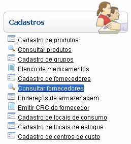

Consultar Ocorrências [ Voltar ]Este formulário permite a localização e conferência de dados dos fornecedores cadastrados. O formulário "Consultar fornecedores" encontra-se dentro do menu "Cadastros". 
Ao clicar no formulário, o sistema exibirá a seguinte tela:
1º Passo: utilize os filtros da pesquisa
para localizar a doação desejada. Para maiores
informações sobre como utilizar a ferramenta de busca, favor ver o
manual "Introdução
ao Sistema". |